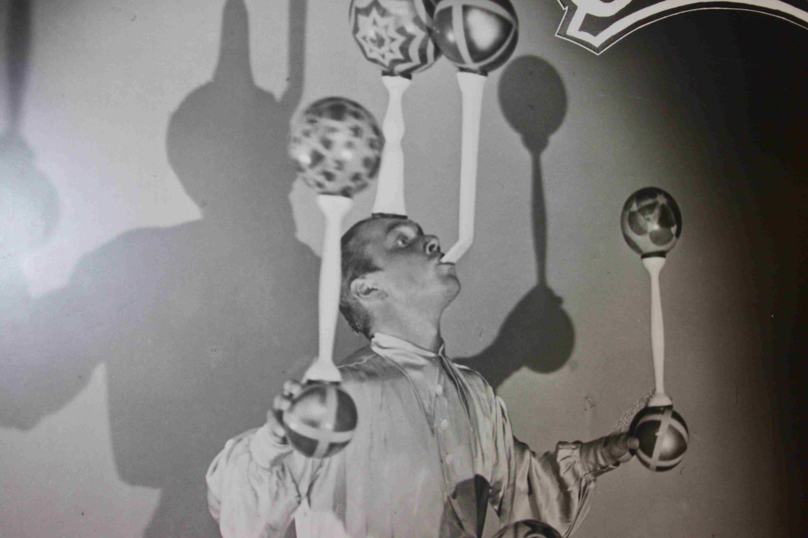

Om Museet
Historien bag Cirkusmuseet
Museets historie er funderet i Ølund Barlys samling. Ølund Barly (1917-1999) samlede igennem et helt liv på rekvisitter, billeder, kostumer m.m. fra cirkusverdenen og dens historie. Han boede i en tre-værelses lejlighed på Vesterbro i København, og da samlingens størrelse oversteg 110.000 enheder, krævede det megen fantasi at få den opbevaret i lejligheden – en fantasi Barly besad. Han placerede blandt andet sin seng højt over gulvet for at kunne få plads til sine cirkusplakater nedenunder.

Museet starter
I 2004 overtog Hvidovre Kommune driften af museet. I 2009 blev museet udvidet betragteligt, da Avedørelejrens gamle Fægtesal takket været fondsmidler fra Realdania og Arbejdsmarkedets Feriefond blev istandsat, så den kunne bruges til cirkusaktiviteter. I dag kan du således få cirkusoplevelser både til krop og sjæl og møde cirkuskunsten på de bedst mulige præmisser.
Udstillingen
Velkommen til Cirkusmuseet
Træd ind på museet og kom med bag om den forunderlige cirkusverden, når du bevæger dig rundt i udstillingen.
På førstesal bliver du mødt at bugtaler Peter Nørgaard, der sammen med hunden Charly giver dig en introduktion til cirkushistorien. Du kan glæde dig til senere i 2021, hvor Peter og Charly gennem hele udstillingen vil gøre dig klogere på artister, cirkus og genstande. Et formidlingslag, som giver både børn og voksne en ny viden og smil på læben..
Nycirkus
Artister optræder ikke kun i manegens savsmuld, og de mange forskellige scener og genre inden for cirkus bliver nu præsenteret i en hel ny form, i museets første udstillingsrum. Se nycirkusartisten Ylva mestre trapezen, gøgleren Jon G. Lør holde styr på alle keglerne og snart også Benny Schumann holde alt porcelænet i luften, mens de fortæller om deres vej ind i manegen.
Traditionelt cirkus
Det traditionelle cirkus byder på smukke, fantastiske og farverige kostumer. Her på museet kan vi blandt andet vise kjoler fra Diana Benneweis, familien Schumann og det revolutionerende kostume med hotpants fra Nelly Jane Benneweis. Kom helt tæt på disse kostumer, mens du hører fortællingen om kostumernes historie. Udstillingen byder også på interaktivitet, du kan bl.a. opleve en cirkusforestilling siddende i en trapez eller fornemme, hvordan det er at køre på line 21 meter over jorden. Derudover kan du se en række sjældne filmklip med bl.a. Charlie Rivel, Cirkus Schumanns heste, løver og tigre i Cirkus Benneweis og tryllekunstneren Truxa. I udstilling kan du se Ølund Barlys jonglørknive, en lille flig af Truxas største hemmelighed, nemlig tankelæsernummeret og Eli Benneweis` karakteristiske Stetson hat. Du kan også se om du har mod til at være klovn eller få prøvet dine holdninger til dyr i cirkus.